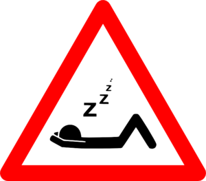
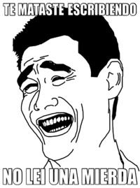

Península ibérica
 De: La Frikipedia, la enciclopedia extremadamente seria.
De: La Frikipedia, la enciclopedia extremadamente seria.
| De la serie planetas para todos:
|
| Península ibérica
|
|
|
| Diámetro
|
Unos cuántos
|
| Inclinación
|
Los gabachos inclinan la península hacia el este
|
| Atmósfera
|
La robaron los rumanos para llenar Castilla.
|
| Gravedad
|
La misma que la Tierra
|
| Satélites
|
Dos (Andorra y Gibraltar)
|
| Sistema planetario
|
Españay Portugal.
|
| Estrella en torno a la que gira
|
Bilbao
|
| ¿Existe vida inteligente?
|
Desde que estan de moda los canis cada vez menos...
|
| Razas
|
Muchos rumanos, muchos gitanos, muchos moros, y cada vez menos espaportugueses(porque sus hembras pasan de fornicar)
|
| Distancia desde la Tierra
|
20 minutos desde Bilbao
|
| Descubridor
|
Manolo (Si,el que todos nos ponemos para honorarlo o para incubrir nuestro verdadero nombre en las bromas telefónicas).
|
La Península Ibérica es un gigantesco planeta, a 4 metros luz de cualquier sitio. Su extensión es de 41.509.903.453.949.494,706 km2, y su aparición data del año 2678 d.C. Se presupone que se creó juntando una albóndiga de pollo y una birrita Superbock. El primer mamífero en habitar la península Iberica (que haya constancia) fue Fraga, en el año 0.
Actualmente la capitalidad está siendo el campo de batalla de Spanish Warriors.
Razas de la Península Ibérikaka
En la PInínsula ibérika, desde el Norte al Sur, coexisten diferentes formas de vida:
- RUMANOS: rumanos y vienen a robar a españoles. Se les distingue de los gitanos españoles en que dicen "ja chacho" muy raro(se cree que en su idioma)
- CHINOS: Raza que destruyó los legendarios "Todo a 100". Desarrolaron unos ojos especiales para poder detectar los fallos en sus copias.
- LATINOS: Misioneros distribuidos por Europa y Yankilandia para repoblar la humanidad.
- ESPAÑOLES: Raza en peligro de extinción. Basan su economia en el trabajo español (1 trabaja y el resto mira).Aparrte de los españoles corrientes existen tambien Vascos, y Hombres Topo.
- PORTUGUESES:Raza también en peligro de extinción(de hecho sus fachas son negros!)se caracterizan por ir a trabajar a España(son los que trabajan y los españoles los que miran),durante siglos colonizaron el mundo con sus toallas e imponer en la Península las costumbres inglesas.
- MARROQUIES: Tambien conocidos como moros, suelen ir en manadas como si de una jauria se tratase, tambien su idioma guarda una similitud al ladrar de los perros. Dicen que si se les miran a los ojos hay un 75% de que exploten en tu cara, 20% que te conviertan en kebab y un 5% de que te vendan una alfombra. Los porcentajes pueden variar segun la mirada que se les haga.
Trabajo en España
 Trabajos intensivos en España
El metodo español
En España se usa un metodo en el trabajo distinto al de otros paises inferiores:
Se utilizan varias personas/ingenieros/vagos/etc para deliverar y perder el tiempo mientras UNA SOLA PERSONA trabaja, frecuentemente inmigrante(casi siempre).
Esto hace que la productividad AUMENTE MUCHO. Veamos un ejemplo:
Se quiere construir una caseta de perro, los trabajadores serán: un ingeniero en casetas, un arquitecto, un geologo (para analizar el suelo), un experto en materiales para casetas, un ingeniero de estructuras, y mi cuñao que es psicologo y de algo valdrá.
-Jefe, que no tenemos obrero...
-Ah, pos llama al yonki de esa esquina y ya está.
 Tipico trabajador español.
Tipos de Español

El primer poblador de la Península
Los españoles se pueden diferenciar facilmente entre sí principalmente por su región:
- GALLEGOS: (Una de las peores jugadas que puedes hacer al Mus) Provienen de Galicia. Fueron los primeros humanos de la Tierra (diluvio Universal Gallego) y todavía no ha parao de llover...
- ASTURIANOS: Provienen de Asturias. Han insertado chips en el fabes y el chorizo, con graves efectos secundarios (sobre todo pal que le toque comerse el pedo!!)
- CÁNTABROS: Provienen de las montañas. Son entorno a dos millones desde que las vacas tienen ciudadanía y derecho a voto. Su alimentación se basa en bocadillos de anchoas entre dos sobaos que mojan en oruju para pasarlo. Están gobernados por el caudillo Revilluca desde que cayó Coroccota primero y el burro sobre el caballo en la vecina Fachander después.
- VASCOS: Provienen de Madrid, y de Euskadi, y de León...(los vascos nacen donde les da la gana). En euskadi está la organización
de g%&***%$$@ terrorista PETA (Pos Esto Tiene que Acabarse)que robando caramelos a niños y robando en supermercados quieren conseguir la independencia de Euskadi.
- NAVARROS: Gente de Navarra.Les gusta correr delante de toros con pañuelos rojos. Son como Mazinger Z y se lo cambiaron por la butifarra a los japoneses.
-
ARAGORNESES ARAGONESES: Más conocidos como maños. Se llevan fatal con los Legolaseses.
- CATALANES: Viven en Cataluña. Dicen cosas como "la pela es la pela", "la pela me la pela", o "pásame una peladilla". Por eso, las mejores tiendas de dinero (las peleterías) están en Cataluña.
- VALENCIANOS: Gente de Valencia...inquietante...
Queman cosas en las fallas; se dice que hacen las fallas para que el gobierno obligue a Gigatrón a volver a arrejuntarse.
- MURCIANOS: Habitantes de Murcia. Su antiguo rey, Murciman quiso destruir el Sol a lapos, pero como el pensaba que el Sol estaba hecho de fuego en vez de chili, mucho chili cayo en Murcia haciendo que pasen calor y que el suelo sea picante.
- LEONESES: Viven en León
y dominaremos el mun... y quieren por todos los medios separarse de Castilla. Los superior... Leoneses hacen cosas de leones y viven en casas de leoneses, lo que desconcierta a los cientificos.
- ANDALUCES: Viven en Andalucía. Allí hay un pueblo llamado Lepe donde sus habitantes han alcanzado el nivel intelectual de los espárragos (probablemente la especie más inteligente del planeta); un dia se daran cuenta de ello y destruiran la humanidad...(ese dia esta lejos).
Tipos de Portugués
- MIÑOTOS:Son los poetugueses pegados a los gallegos (a los que les copiaron el idioma),suelen oler a humo y estar salidos, les encanta ir a pasear a las Megalópolis gallegas(Vigo y Tui) porque el resto de Portugueses no les dá importancia.
- PORTUGALLEGOS:Los Portugueses más antiguos, son el núcleo duro y se encuentran repartidos por todo el país, están obsesionados con su independencia(que si madrid les quiere invadir, que si la batalha de aljubarrota, que si Isabel la Católica quería quemar todas las toallas...) y son más chauvinistas que los franceses(su café es lo más,su bacalao es lo más,su puente de Lisboa es el más grande del mundo,su república es lo más).
- LISBOETAS:los más finos y delicados, son todos unos hipsters,gafapastas y arties(por eso odian a Homens da Luta),no suelen salir de su país, excepto cuando son adolescentes y sólo van a Londres y a Barcelona.
- ALGARVERIANOS:son los que más saben de idomas porque viven de los turistas(si, incluso turistas madrileños),suelen ser tan generosos que regalan sus playas a los de Extremadura y Castilla y león.
- PORTENSES:son los que hacen las toallas portuguesas y hacen que sus hembras lleven bigote, de ahí sus costumbres tan inglesas, suelen ser invadidos por los gallegos que les van al IKEA.
Sitios de la Península que debes visitar
- Portugal (la España soñada):de echo si dices que países ocupan la Península Ibérica todo español dirá:España, si la pregunat es que país ocupa el continente americano dirá:Estados Unidos.
- Rana Gustavo, y Mr. T
- Mi casa
- Tu casa
- El escondite de Bin Laden (sí, está en España)
- Un safari de folklóricas, esta muy de moda.
- Un coto de caza de pijos, canis, emos, etc en cualquier ciudad.
- La escuela jedi del papa del lado oscuro
- A el afilador
Sitios de la Península que NO debes visitar
- Portugal, ¡es lo que esperan que hagamos!
- Pensándolo bien, mi casa
- Pachá Ibiza, o lo LAMENTARÁS
- Sitios canis, stios emos, o sitios pijos (a menos que estes de caza).
- Madrid:sino cientos de madrileños te asaltarán pa robarte la cartera y poder pagarse el piso.
Clases Dominantes
Los canis son la escoria raza en mayor numero, pero los verdaderos señores son los jebis que obtienen el poder de lo que desean ao$%@#ndo canis.
Existen tambien en gran número latinos, y los raperos y skaters se están extinguiendo(quizá porque su única neurona se ha reproducido)
Por debajo de estos y por debajo de la m$%&@a están los pijos y los emos, que suplican clemencia a los jebis.
Por encima de todos están los hombres topo y los que escriben en frikipedia. MUAHAHAHA
El "jefe"

Juancar defendiendoEspaña
En nuestro desgraciado caso nos ha tocado un tipo con cejas llamado ZP; pero este pelele de las cejas tiene alguien por encima:
MAGNETO EL REY.
Este rey se le conoce como Juan Carlos I de Borbón o juancar. Le pagamos con los impuestos de todos los españoles para que haga cosas de vital importancia como "¿por que no te callas?", comprar sus putos yates y atacar el Jueves con sus poderes de emperador del mal reales.
Pero lo que en realidad se desconoce esque el rey y ZP no son los verdaderos jefes...
Quien los controla permanece en las sombras y es el terrible Emperador Gustav III, mas conocido como Rana Gustavo.
En Portugal son un poco más rojillos y tienen una república y son muy muy sullos con ekl café.
En Juan K 1)
El chiste español

¡¿Qué decías de un negro, eh c&%&*%*?!
En España hay una importante cualidad: el chiste.
Todo el mundo sabe algún chiste a menos que sea subnormal, tonto, o que no lea el sagrado texto.
Pero no cualquiera puede contar un chiste español; debe cumplir requisitos:
- La principal variedad de sus chistes son de tías o moros.
- Aprovecharán para contar ese repertorio justo cuando haya un monton de negros, tias o moros que se puedan ofender.
- Alguno de los anteriores le mirará mal.
- Pero al español se la sudara y contara el chisate y otros 42 chistes mas.
- Al final el negro/moro se cabreará y irá a zurrar al español.
- Este acabrá su lista de 3 horas de chistes y se reirá
- Luego mirará hacia sus colegas, que habrán desaparecido ya, y el moro/negro se hará un xilófono con sus costillas.
- Mientras el español cuenta otro chiste
Autor(es):
- Krusher
- Hari Seldon
- Ibérico
- MURO DE AGUAS
- doctor grijander
- Frikiman
- El Sevillano
- Corbí
- Jackie27
- Peterliceo
Frikipedia 2005-2016, Licencia
GFDL 1.2 - Extraído por FrikiLeaks